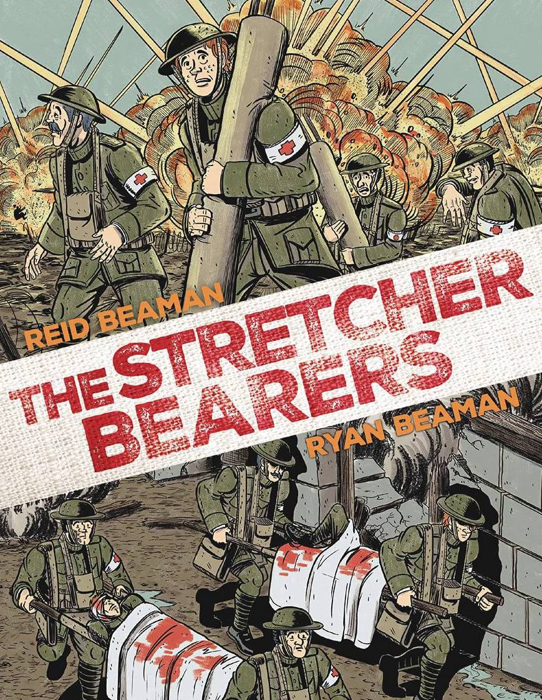
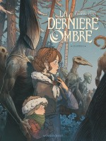
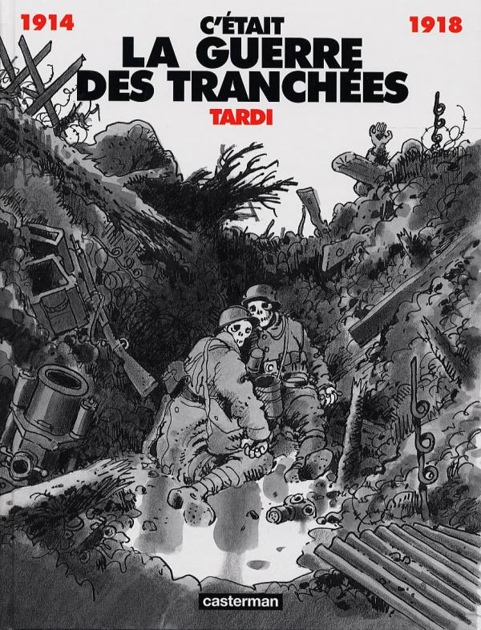

Reviews of Graphic Novels
I review graphic novels (comics) with a focus on World War I and Norwegian authors.
Many of these books were originally written in French or Norwegian. English translations are not always available.
All my reviews are written in English.
Norwegian Comics
Magnus Carlsen og Sjakkmorderen
In this infinitely silly and action-filled story, a serial killer has divided Oslo into a chess board and presents world champion Magnus Carlsen with chess riddles that he must solve in order to determine the location of the next murder.
One of the co-authors called this review “interesting and reflective” and especially liked my suggestion that the book be turned into a movie starring Magnus Carlsen himself!
World War I Comics

The Stretcher Bearers
Reid Beaman’s debut comic tells the story of Maxwell Fox, a stretcher bearer with the US Army 4th Infantry during the final months of World War I.

La Dernière Ombre
Denis-Pierre Filippi and Gaspard Yvan combine their artistic forces in this supernatural story set in Russia during World War I and the Russian Revolution.

C'était la guerre des tranchées
This graphic novel by Jacques Tardi is a classic of the genre. Published in 1993, it draws on the experiences of the author's grandfather, who served with the French army during the war.